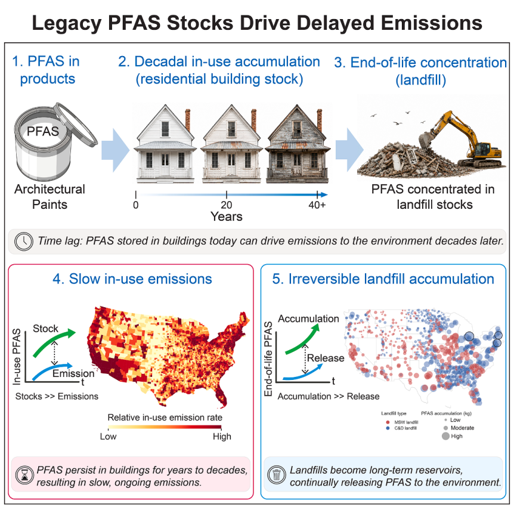
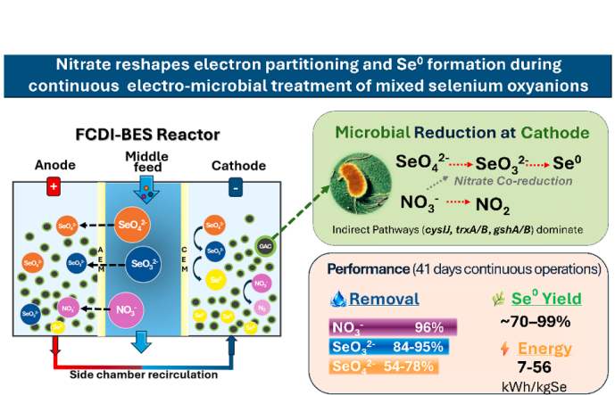

Publications
Google Scholar Profile
Where do persistent chemicals go after we use them — and when do they come back? Our material flow analysis (MFA) research tracks substances such as PFAS and BPA through products, buildings, and waste systems over decades, at national to county resolution. Our latest study modeled PFAS in US residential paint from 2000 to 2060: in-use stocks exceeded annual emissions 47-fold in 2020, and landfill emissions are projected to grow more than 25-fold by 2060 — evidence that legacy stocks, not current use, will dominate future risk.
Our toolkit combines dynamic stock–flow modeling, census-tract geospatial allocation with road-network waste routing, Monte Carlo uncertainty analysis, and Sobol global sensitivity analysis, and we release all code and data openly. We welcome collaborators who want to connect measurements to system-wide chemical fate, and students eager to build quantitative, policy-relevant skills at the intersection of environmental engineering, data science, and industrial ecology.
Supported by the U.S. National Science Foundation (Award 2144550). Full publication list on Google Scholar.

Selenium in industrial wastewater such as must not only be removed from water but converted into a stable, non-hazardous solid form. Our bio-electrochemical systems (BES) research develops compact reactor platforms that pair electrochemical ion removal with microbial reduction to achieve both. Our latest study operated a continuous-flow reactor for 41 days treating mixed selenium oxyanions alongside nitrate, a common co-contaminant: selenite and selenate removal reached 84–95% and 54–78%, and nitrate unexpectedly boosted elemental selenium yield from 70% to 99%, though metagenomic analysis suggests the transformation is driven largely by nonspecific detoxification pathways rather than dedicated selenate reductases.
We welcome collaborators interested in extending this platform to other areas, and students eager to work at the interface of reactor design, electrochemistry, and metagenomic sequencing.
Supported by the U.S. National Science Foundation (Awards 2329227 and 2019561) and a University of Alabama Small Research Grant. Full publication list on Google Scholar.
- Biomass-based concrete could effectively decarbonize buildings in Mexico. Rosas-Diaz, Felipe, Cesar A. Juárez-Alvarado, Mingming Chen, Yunyang Ye, Rupert J. Myers, and Daqian Jiang. 2025Resources, Conservation and Recycling 219: 108264.
- Delayed pipe replacement halves environmental impacts but quadruples water loss. Clayton, Jonathan G., Ricardo L. Mejía-Marchena, Daqian Jiang, and Leigh G. Terry. 2024AWWA Water Science 6(2): e1366.
- Permeability is the critical factor governing the life cycle environmental performance of drinking water treatment using living filtration membranes. Jiang, Daqian, Dianxun Hou, Carson Bechtel, Katherine R. Zodrow, Rupert J. Myers, and Tianyu Zhang. 2020Environmental Science & Technology 54(12): 7651–7658.